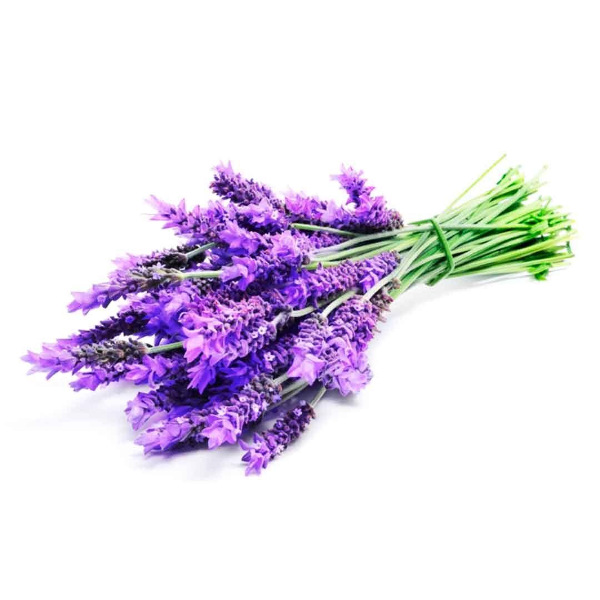

¿Es seguro comer lavanda?
¿Que puedo definir como "seguro"?
Defino que algo se puede consumir de manera segura si al ingerirlo no se presenta efectos potencialmente mortiferos
o/y dañinos a corto o largo plazo al cuerpo humano
Elementos relevantes de la lavanda
- linolino de acetato
- y una substancia depresiva al sistema nervioso central
Obiamente los compuestos quimicos de la lavanda se extiende mas que estos dos, pero para nuestra incognita eston son los unicos releveantes
el linolino de acetato es un pseudo-estrogencia, y un leve antiandrogenico, que significa esto? significa que puede disruptir las hormonas del cuerpo de una persona
una substancia "estrogenica" mimica a la hormona sexual femenina conocida como estrogeno en el cuerpo de una mujer puede siruptir el cyclo hormonal y en un hombre puede disminir la densidad osea y reducir fertilidad
un "antiandrogenico" simplemente se refiere a toda cosa que mitigue el efecto de la testosterona, no solo afecta a los hombre si no que tambien las mujeres porque dentro del cuerpo es requerida para ciertos procesos de homoestasis
la otra substancia relevante es un depresivo del sistema nervioso central esto se refiere a que reduce la funcionalidad del mismo, las potenciales implicaciones de esto pueden ser fatales, en el contexto de la lavanda se limita a meramente relajarse
esta substancia es lo que causa la relajacion por la lavanda y es consumida recreativamente,
Conclusion
incluso con el potencial riesgo, es seguro ingerirlo dado a que para que los efectos previamente mencionados sucedan se necesitaria una cantidad ludicra de lavanda y a ese punto la substancia quimicas es el menor de tus problemas